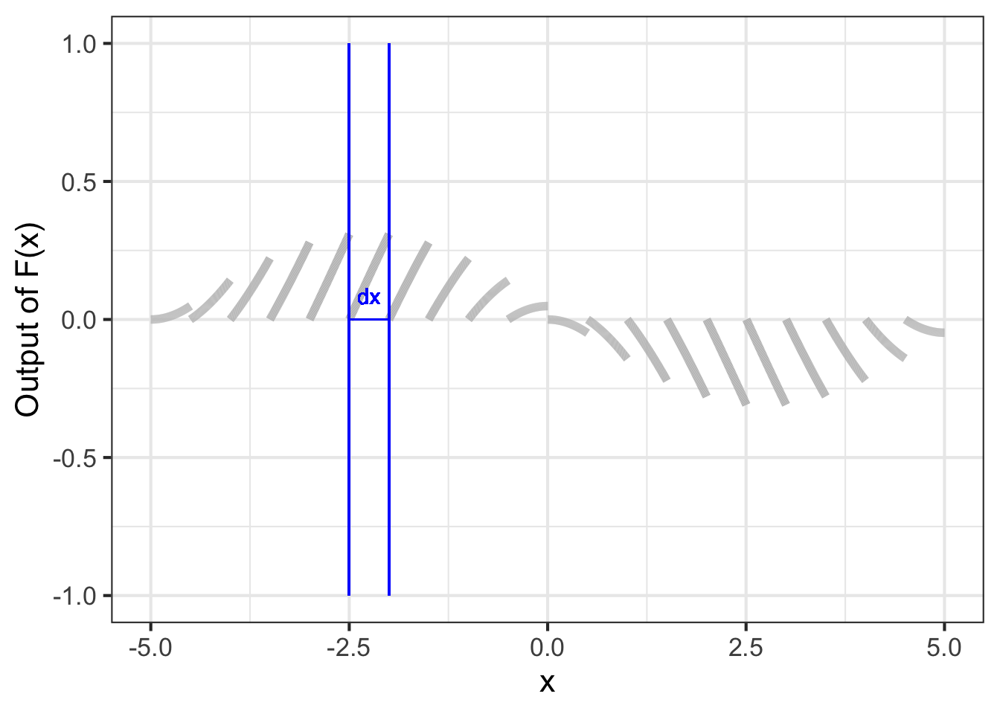
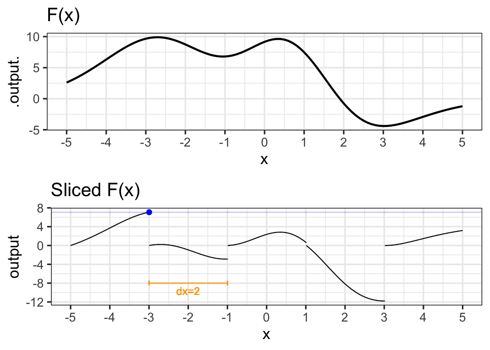

35 Totaling the little bits
Many students wonder how it is possible to reconstruct a function \(F(x)\) from its derivative \(f(x)\). The point of this short chapter is to help you develop some intuition about anti-differentiation.
You already know the notation meaning “\(F(x)\) is the anti-derivative of \(f(x)\)”: \[\large \int f(x)\, dx\ .\] In drawing a graph of \(F(x)\), we will of course want to use coordinate axes where the quantity \(x\) is represented on the horizontal axis and the quantity of the output \(F(x)\) is on the vertical axis:
It is premature to have drawn a segment of \(F(x)\) because we haven’t yet undertaken to compute \(F(x) = \int f(x)\, dx\). At this point in the process, all we know is \(f(x)\), not \(F(x)\). Still, since we know \(f(x)\), we do know the slope of the little segment of \(F(x)\). We just don’t know where that segment should be located vertically in each of the \(dx\) regions that make up the whole domain.
We cannot draw \(f(x)\) in the ordinary way as a curve wending its way across the domain of the graph. Why not? Because the vertical axis of the graphics frame is in terms of \(F(x)\) and has a different dimension than the output of \(f(x)\).
But we can draw \(f(x)\) in terms of the slope of a segment of horizontal extent \(dx\), so long as we accept that the vertical position of that segment means nothing: \(f(x)\) gives information only about the slope of the segment. The best we can do at this point is to graph \(f(x)\) in terms of sloping segments, as in Figure 35.2.
## Warning: Using `size` aesthetic for lines was deprecated in ggplot2 3.4.0.
## ℹ Please use `linewidth` instead.
Each of the segments in Figure 35.2 has the same horizontal extent, namely \(dx\). When we draw a sloping segment over the tiny bit \(dx\) of the domain, the vertical extent of the segment will be the product of the width \(dx\) and the slope \(f(x)\). That is, the vertical extent will be the product \(f(x) dx\).
Whenever we know a function \(f(x)\) and have chosen a size for \(dx\) we can draw a graph of \(f(x)\) in the form shown in Figure 35.2. We are drawing it in this unusual way because we want the graphics frame to be all ready for drawing the graph of \(F(x)\) in the normal fashion after we have figured out what \(F(x)\) results from accumulating/summing-up all the little \(f(x) dx\) segments. When we write \(\large\int\) in the notation \[\large \int f(x)\, dx\] we mean, “sum up all the \(f(x) dx\) segments.”
Let’s now consider how to “sum up all the segments.” we will start in Figure 35.3 with an example where we already know \(F(x)\). That way, we can see of our sum of the \(f(x) dx\) segments really does reconstruct \(F(x)\).

Now imagine that we sliced up \(F(x)\) over small sub-domains of \(x\), as in Figure 35.3 (bottom). That is, we approximated \(F()\) piecewise locally. But we’ve broken the continuity of \(F(x)\) by moving each slice up or down so that the left-most point has value 0.
Can you reconstruct \(F(x)\) from the local segments?
Start by reading off the function value from the last point in the left-most segment. That is been marked in Figure 35.3 with a blue dot. The function value at that dot is 7.072.
Now take the second segment. The idea is to move that segment upward until it joins the first segment at the blue dot. You can do that by adding 7.072 to the second segment. The result is shown in Figure 35.4(top).
Now read off the new value at the end of the second segment, it is 4.198. Add this amount to the third segment as in Figure 35.4(bottom).
Continue this process until you have reconstructed \(F(x)\) from the local segments.
You may object: “Of course you can reconstruct \(F(x)\) from the local segments, but this isn’t the same as reconstructing \(F(x)\) from its derivative \(\partial_x F(x)\).” My answer: “That depends on how many segments you use.”
When we make the segment width \(h\) smaller and smaller, the individual segments become more and more like straight lines. Figure 35.5 shows the segments for smaller and smaller \(h\).
Notice that many of the segments are straight lines. That is understandable, since any function looks like a straight line over a small enough domain.
Each of those straight-line segments is drawn over a domain \(x_i < x < x_i+dx\) that has width \(dx\). For \(dx\) small enough, the segment is well approximated by a straight line with slope \(\partial_x F(x_i)\). Multiplying slope by width \(dx\) gives the segment height: \(\left[{\large\strut}\partial_x F(x_i)\right]\ dx\). Of course, remember that \(\partial_x F(x) = f(x)\) helps us see that each of the little segments is \(f(x_i)\ dx\).
Lets review. The standard notation for anti-differentiation can be interpreted in terms of putting together segments, or, in the words of Prof. Thompson in Calculus Made Easy, “totaling up all the little bits.” (See Section 34.5.)
We start with the function that we already know: \(\large f(x)\). Remember that \(f(x)\), at each value of \(x\) will be the slope of \(F(x)\). Why? Because \(F(x)\) is the anti-derivative of \(f(x)\), so \(f(x)\) is the derivative of \(F(x)\).
Now divide the domain \(x\) into many little bits. Each of these sub-domains is \(\large dx\), a little chunk of \(x\).
On each of the little chunks, draw in \(f(x)\). Since \(f(x)\) is the slope of \(F(x)\), we will draw \(f(x)\) for any given chunk as a short line segment of that slope over the chunk, as in Figure 35.2. We will write these little bits, each of which is very nearly a straight-line, as \(\large\color{blue}{f(x) dx}\).
Assemble together all the \(f(x)dx\) segments from (3) to get \(F(x)\). This instruction to assemble is denoted \[\Large \color{blue}\int\]
Altogether, we have:
\[\large \underbrace{\underbrace{\Large\color{magenta}{\int}}_{\color{magenta}{\text{assemble}}} \underbrace{\Large \overbrace{f(x)}^{\small\text{slope of F(x)}}\ \ \overbrace{\strut dx}^{\small \text{bits of}\ x}}_{\color{blue}{\text{the slope segments}}}}_{\text{giving}\ {\Large F(x)+C}\ \text{altogether.}}\]
Returning to the example with which we started the chapter, here are the little segments of the slope function shown in Figure 35.2 assembled together to produce the anti-derivative function.